Depuis 1886, à pied.
Plus d’un siècle d’ascensions, de cabanes, de secours et de culture alpine : l’histoire de la section en étapes.
Les étapes
Parallèlement à son activité sur le terrain, la section a toujours organisé des projections, des conférences et des débats, et documenté sa vie dans de nombreuses publications et dans ses annuaires.
-
1886
Le 11 avril, à la Birraria Gambrinus de Bellinzona, naît le Club Alpino Ticinese, l’année du centenaire de la première ascension du Mont Blanc, réussie en 1786 par Jacques Balmat et Michel-Gabriel Paccard. Le premier président est l’avocat Curzio Curti. Le but : visiter, étudier et faire connaître les montagnes du canton et des régions voisines.
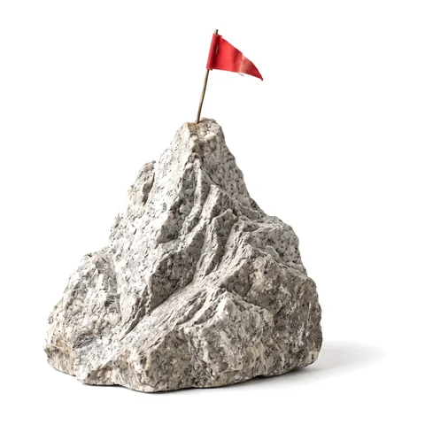
-
1887
Le 20 mars, le club rejoint le Club Alpin Suisse comme section tessinoise ; Lugano en devient le siège.
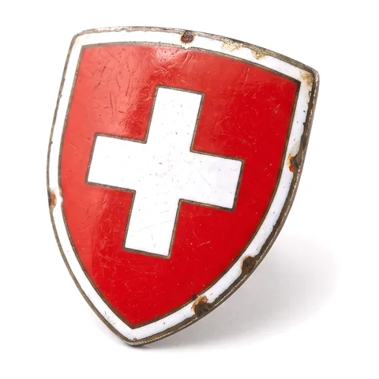
-
1911
De l’autre côté de la frontière, à Lanzo d’Intelvi, la bannière de la section est inaugurée. L’année suivante, le 11 août 1912, la section inaugure dans le haut Val Piumogna, au pied du sommet du même nom, la Capanna Campo Tencia : la première cabane des montagnes tessinoises.
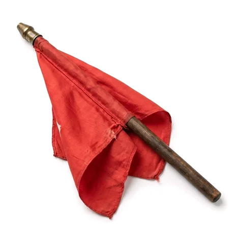
-
1913
Les femmes ne sont pas admises au CAS : à Lugano, les alpinistes fondent alors un club à elles, présidé par Adelina Rossi-Baragiola. Il deviendra la section de Lugano du Club Suisse des Femmes Alpinistes, né en 1918, et le 22 septembre 1924 il sera présent, avec quelque 300 personnes, à l’inauguration de la Capanna Adula.
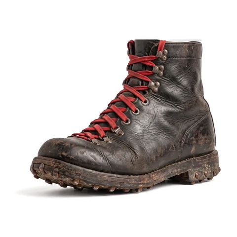
-
1918
En Léventine et dans le Val Blenio se constituent les stations de secours alpin de Faido, Airolo et Olivone : pour la première fois, qui se blesse en montagne peut compter sur des équipes organisées. La formation des guides revient à la section, leur nomination au Conseil d’État.
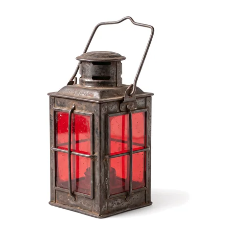
-
Années 1930
L’escalade sur rocher se développe : Emilio Comici, le numéro un de l’alpinisme italien, est invité aux Denti della Vecchia, où il ouvre en 1935 avec Tita Calvi la voie qui porte son nom ; les Denti deviennent le site d’escalade de la section, et Riccardo Cassin s’y entraîne aussi. En 1932, Tita Calvi, l’abbé Giugni et Aldo Balmelli ouvrent la face nord-est du Piz Prevat ; Bruno Primi « Stüva » devient guide et signe de grandes classiques, de la Civetta au Cervin. En 1935, Calvi et Balmelli dirigent la première école de ski du Tessin, à l’Alpe Musgatina.
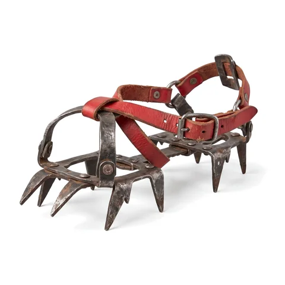
-
1936
La section fête ses cinquante ans avec la première cabane sur le Monte Bar : les femmes de Bidogno portent les matériaux dans des hottes jusqu’au chantier, et bientôt on compte le dimanche plus de 300 skieurs sur les pistes. La même année, les premiers membres arrivent dans l’Himalaya central ; suivront la Laponie (1959), le Huascarán (1977) et le Pumori (1978).
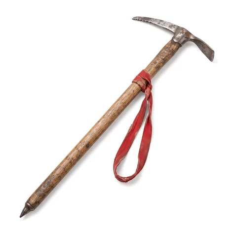
-
1940
Naissance du groupe Seniors.
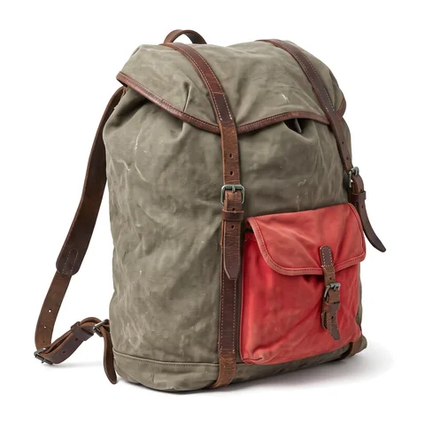
-
Années 1960
Naissance du groupe de jeunesse OJ et mise en service de la colonne de secours du Sottoceneri. En 1963, l’alpiniste Aldo Fontana apporte un nouvel élan ; en 1964 naît le Gruppo Scoiattoli, qui au fil des années ouvrira et documentera la plupart des voies des Denti della Vecchia.
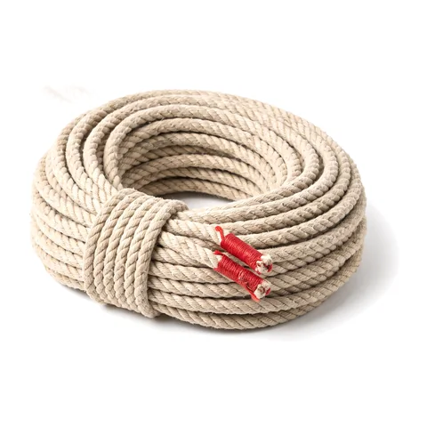
-
1980
Les sections masculine et féminine fusionnent, comme dans toute la Suisse : jusque-là, le Club Alpin Suisse était réservé aux hommes et les alpinistes avaient leur propre club. Derrière, une décennie difficile : le 22 août 1975, un incendie détruit la Capanna Campo Tencia, qui renaît en 1977 avec une structure en acier, novatrice pour l’époque, de l’architecte de la section Oscar Hofmann.
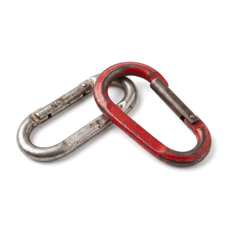
-
1982
Première édition de la « semaine mini » pour les plus petits.
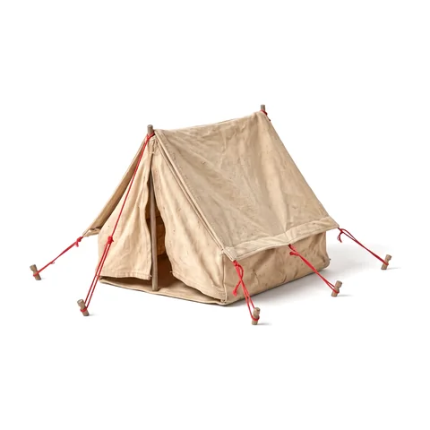
-
2003
En février 1999, une série d’avalanches avait détruit l’ancienne Capanna Cristallina, de 1939. La nouvelle, conçue par les architectes Nicola Baserga et Christian Mozzetti, s’élève sur le Passo di Cristallina à 2575 m en seulement huit mois de chantier, durant les étés 2001 et 2002 ; elle ouvre en décembre 2002 et est inaugurée officiellement en juillet 2003. C’est la première cabane moderne du CAS.
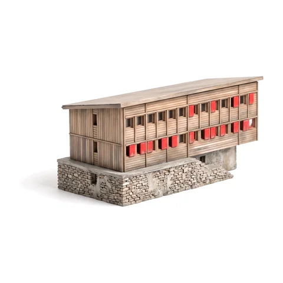
-
2016
Quatre-vingts ans après la première cabane ouvre la nouvelle Capanna Monte Bar. Le concours de 2014 avait été remporté, parmi trente projets, par « Barlume » des architectes Oliviero Piffaretti et Carlo Romano : un bâtiment simple en bois, construit autour du foyer comme lieu de rencontre et pensé avec la commune de Capriasca pour valoriser toute la région.
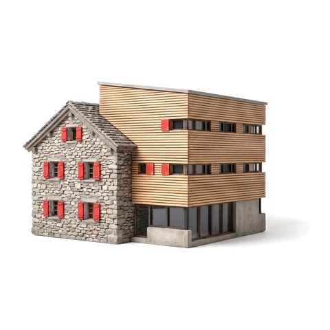